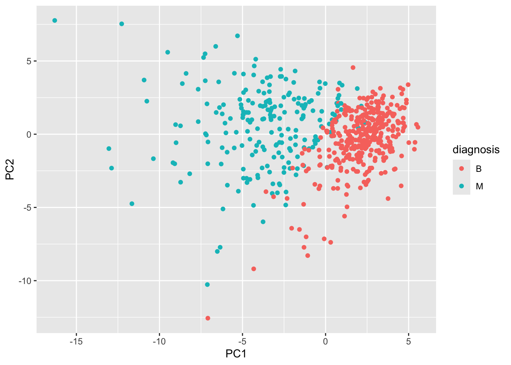
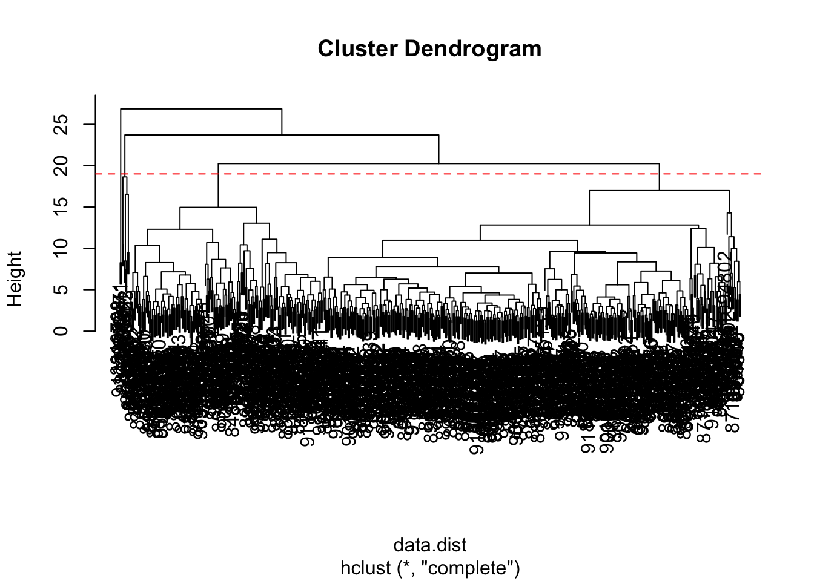
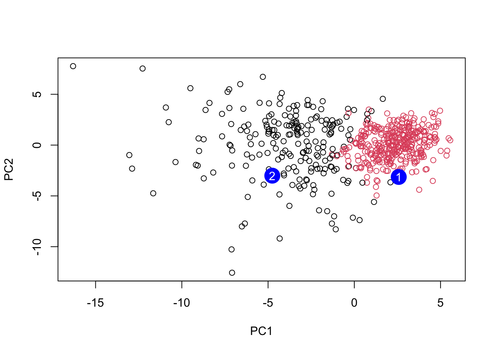

# Read the Wisconsin cancer dataset from a CSV file
wisc.df <- read.csv("WisconsinCancer.csv", row.names = 1)class08
Background
The goal of this mini-project is for you to explore a complete analysis using the unsupervised learning techniques covered in class.
Today we will analyze a biopsy data-set from fine needle aspiration (FNA) of a breast mass.
Data Import
The data is made available as a CSV file for download. We can read this using read.csv():
# Display the first 3 rows of the dataset
head(wisc.df, 3) diagnosis radius_mean texture_mean perimeter_mean area_mean
842302 M 17.99 10.38 122.8 1001
842517 M 20.57 17.77 132.9 1326
84300903 M 19.69 21.25 130.0 1203
smoothness_mean compactness_mean concavity_mean concave.points_mean
842302 0.11840 0.27760 0.3001 0.14710
842517 0.08474 0.07864 0.0869 0.07017
84300903 0.10960 0.15990 0.1974 0.12790
symmetry_mean fractal_dimension_mean radius_se texture_se perimeter_se
842302 0.2419 0.07871 1.0950 0.9053 8.589
842517 0.1812 0.05667 0.5435 0.7339 3.398
84300903 0.2069 0.05999 0.7456 0.7869 4.585
area_se smoothness_se compactness_se concavity_se concave.points_se
842302 153.40 0.006399 0.04904 0.05373 0.01587
842517 74.08 0.005225 0.01308 0.01860 0.01340
84300903 94.03 0.006150 0.04006 0.03832 0.02058
symmetry_se fractal_dimension_se radius_worst texture_worst
842302 0.03003 0.006193 25.38 17.33
842517 0.01389 0.003532 24.99 23.41
84300903 0.02250 0.004571 23.57 25.53
perimeter_worst area_worst smoothness_worst compactness_worst
842302 184.6 2019 0.1622 0.6656
842517 158.8 1956 0.1238 0.1866
84300903 152.5 1709 0.1444 0.4245
concavity_worst concave.points_worst symmetry_worst
842302 0.7119 0.2654 0.4601
842517 0.2416 0.1860 0.2750
84300903 0.4504 0.2430 0.3613
fractal_dimension_worst
842302 0.11890
842517 0.08902
84300903 0.08758Make sure we remove or exclude the diagnosis column from the data-set that we use for further analysis - this is the expert diagnosis as either M or B:
# We can use -1 here to remove the first column and create diagnosis vector for later
wisc.data <- wisc.df[,-1]
diagnosis <- as.factor(wisc.df$diagnosis)Exploratory data analysis
Q1. How many observations are in this dataset?
# Find number of rows (observations/samples)
nrow(wisc.data)[1] 569Q2. How many of the observations have a malignant diagnosis?
# Count how many are Malignant (M) vs Benign (B)
table(wisc.df$diagnosis)
B M
357 212 # Count how many are Malignant (M)
sum(wisc.df$diagnosis == "M")[1] 212Q3. How many variables/features in the data are suffixed with _mean?
We can use the grep() function to help us here:
# Return all the column names
colnames(wisc.data) [1] "radius_mean" "texture_mean"
[3] "perimeter_mean" "area_mean"
[5] "smoothness_mean" "compactness_mean"
[7] "concavity_mean" "concave.points_mean"
[9] "symmetry_mean" "fractal_dimension_mean"
[11] "radius_se" "texture_se"
[13] "perimeter_se" "area_se"
[15] "smoothness_se" "compactness_se"
[17] "concavity_se" "concave.points_se"
[19] "symmetry_se" "fractal_dimension_se"
[21] "radius_worst" "texture_worst"
[23] "perimeter_worst" "area_worst"
[25] "smoothness_worst" "compactness_worst"
[27] "concavity_worst" "concave.points_worst"
[29] "symmetry_worst" "fractal_dimension_worst"# Find column names that contain "_mean" and count matches found
length(grep("_mean", colnames(wisc.data), value = T))[1] 10Principal Component Analysis (PCA)
We need to scale our data before PCA with the scale=TRUE argument to prcomp().
wisc.pr <- prcomp(wisc.data, scale=TRUE)
summary(wisc.pr)Importance of components:
PC1 PC2 PC3 PC4 PC5 PC6 PC7
Standard deviation 3.6444 2.3857 1.67867 1.40735 1.28403 1.09880 0.82172
Proportion of Variance 0.4427 0.1897 0.09393 0.06602 0.05496 0.04025 0.02251
Cumulative Proportion 0.4427 0.6324 0.72636 0.79239 0.84734 0.88759 0.91010
PC8 PC9 PC10 PC11 PC12 PC13 PC14
Standard deviation 0.69037 0.6457 0.59219 0.5421 0.51104 0.49128 0.39624
Proportion of Variance 0.01589 0.0139 0.01169 0.0098 0.00871 0.00805 0.00523
Cumulative Proportion 0.92598 0.9399 0.95157 0.9614 0.97007 0.97812 0.98335
PC15 PC16 PC17 PC18 PC19 PC20 PC21
Standard deviation 0.30681 0.28260 0.24372 0.22939 0.22244 0.17652 0.1731
Proportion of Variance 0.00314 0.00266 0.00198 0.00175 0.00165 0.00104 0.0010
Cumulative Proportion 0.98649 0.98915 0.99113 0.99288 0.99453 0.99557 0.9966
PC22 PC23 PC24 PC25 PC26 PC27 PC28
Standard deviation 0.16565 0.15602 0.1344 0.12442 0.09043 0.08307 0.03987
Proportion of Variance 0.00091 0.00081 0.0006 0.00052 0.00027 0.00023 0.00005
Cumulative Proportion 0.99749 0.99830 0.9989 0.99942 0.99969 0.99992 0.99997
PC29 PC30
Standard deviation 0.02736 0.01153
Proportion of Variance 0.00002 0.00000
Cumulative Proportion 1.00000 1.00000Let’s see the “PC score plot”
library(ggplot2)
ggplot(wisc.pr$x) +
aes(PC1, PC2, col = diagnosis) +
geom_point()
Q4. From your results, what proportion of the original variance is captured by the first principal component (PC1)?
summary(wisc.pr)$importance[2,1][1] 0.44272Q5. How many principal components (PCs) are required to describe at least 70% of the original variance in the data?
# Extract the cumulative proportion of variance explained by each principal component
cumvar <- summary(wisc.pr)$importance[3,]
# Find the first principal component where cumulative variance is at least 70%
which(cumvar >= 0.70)[1]PC3
3 Q6. How many principal components (PCs) are required to describe at least 90% of the original variance in the data?
# Extract the cumulative proportion of variance explained by each principal component
cumvar <- summary(wisc.pr)$importance[3,]
# Find the first principal component where cumulative variance is at least 90%
which(cumvar >= 0.90)[1]PC7
7 Q7. What stands out to you about this plot? Is it easy or difficult to understand? Why?
biplot(wisc.pr)
# Plot using coordinate data, plot as a scatter plot
ggplot(wisc.pr$x) +
aes(PC1, PC2, col = diagnosis) +
geom_point()
The biplot is difficult to understand because it is crowded with too many observation labels and variable arrows all plotted at once. This makes it hard to see patterns or separation between groups. A simple scatter plot of PC1 vs PC2 is much easier to interpret.
Q8. Generate a similar plot for principal components 1 and 3. What do you notice about these plots?
# Repeat for components 1 and 3
ggplot(wisc.pr$x) +
aes(PC1, PC3, col = diagnosis) +
geom_point()
The PC1 vs PC3 plot shows much weaker separation between malignant and benign samples compared to the PC1 vs PC2 plot. PC1 still separates the groups, while PC3 does not provide much additional distinction, and the points appear more mixed.
Q9. For the first principal component, what is the component of the loading vector (i.e. wisc.pr$rotation[,1]) for the feature concave.points_mean? This tells us how much this original feature contributes to the first PC. Are there any features with larger contributions than this one?
# Get loading value for concave.points_mean on PC1
wisc.pr$rotation["concave.points_mean", 1][1] -0.2608538The loading value for concave.points_mean on PC1 is large, which shows it strongly contributes to the first principal component. However, there are other features (such as radius_mean, perimeter_mean, and area_mean) that have similar or slightly larger contributions.
Q10. Using the plot() and abline() functions, what is the height at which the clustering model has 4 clusters?
# Scale the wisc.data data using the "scale()" function
data.scaled <- scale(wisc.data)# Calculate Euclidean distance between all observations
data.dist <- dist(data.scaled)# Perform hierarchical clustering using complete linkage
wisc.hclust <- hclust(data.dist, method = "complete")# Plot dendrogram
plot(wisc.hclust)
# Draw horizontal line where ~4 clusters appear
abline(h = 19, col = "red", lty = 2)
# Cut the dendrogram into 4 clusters
wisc.hclust.clusters <- cutree(wisc.hclust, k = 4)# Compare clusters to true labels
table(wisc.hclust.clusters, diagnosis) diagnosis
wisc.hclust.clusters B M
1 12 165
2 2 5
3 343 40
4 0 2The clustering model has approximately 4 clusters at a height of around 19–20.
Q12. Which method gives your favorite results for the same data.dist dataset? Explain your reasoning.
# Try different hierarchical clustering methods
hc.single <- hclust(data.dist, method = "single")
hc.complete <- hclust(data.dist, method = "complete")
hc.average <- hclust(data.dist, method = "average")
hc.ward <- hclust(data.dist, method = "ward.D2")
# Compare how each method separates diagnosis using 4 clusters
table(cutree(hc.single, k = 4), diagnosis) diagnosis
B M
1 356 209
2 1 0
3 0 2
4 0 1table(cutree(hc.complete, k = 4), diagnosis) diagnosis
B M
1 12 165
2 2 5
3 343 40
4 0 2table(cutree(hc.average, k = 4), diagnosis) diagnosis
B M
1 355 209
2 2 0
3 0 1
4 0 2table(cutree(hc.ward, k = 4), diagnosis) diagnosis
B M
1 0 115
2 6 48
3 337 48
4 14 1My favorite method is ward.D2 because it gives more balanced and biologically meaningful clusters compared to the other methods. Since ward.D2 minimizes the variance within clusters, it tends to group samples that are more similar overall. This makes sense for this data set because malignant and benign samples should cluster based on similar nucleus measurements. Overall, it gives clearer separation between malignant and benign diagnoses than methods like single linkage, which can create messier chained clusters.
Q13. How well does the newly created hclust model with two clusters separate out the two “M” and “B” diagnoses?
# 1. Create clustering model using first 7 PCs
wisc.pr.hclust <- hclust(dist(wisc.pr$x[,1:7]), method = "ward.D2")
# 2. Cut into 2 clusters
wisc.pr.hclust.clusters <- cutree(wisc.pr.hclust, k = 2)
# 3. Now compare to diagnosis
table(wisc.pr.hclust.clusters, diagnosis) diagnosis
wisc.pr.hclust.clusters B M
1 28 188
2 329 24The PCA-based hierarchical clustering separates the data very well into two clusters. One cluster contains mostly malignant samples (188 M vs 28 B), while the other contains mostly benign samples (329 B vs 24 M). This indicates strong separation with relatively few mismatches.
Q14. How well do the hierarchical clustering models you created in the previous sections (i.e. without first doing PCA) do in terms of separating the diagnoses? Again, use the table() function to compare the output of each model (wisc.hclust.clusters and wisc.pr.hclust.clusters) with the vector containing the actual diagnoses.
table(wisc.hclust.clusters, diagnosis) diagnosis
wisc.hclust.clusters B M
1 12 165
2 2 5
3 343 40
4 0 2The hierarchical clustering without PCA performs worse at separating the diagnoses. The clusters are less cleanly divided, with more mixing of malignant and benign samples across multiple clusters. Compared to the PCA-based clustering, this is less effective at clearly distinguishing between the two groups.
Q16. Which of these new patients should we prioritize for follow up based on your results?
grps <- cutree(wisc.pr.hclust, k = 2)
# Read in new patient samples
url <- "https://tinyurl.com/new-samples-CSV"
new <- read.csv(url)
# Project new samples onto the PCA model
npc <- predict(wisc.pr, newdata = new)
# Plot original samples using PC1 and PC2
plot(wisc.pr$x[,1:2], col = grps)
# Add new patient samples as large blue points
points(npc[,1], npc[,2], col = "blue", pch = 16, cex = 3)
# Label the two new samples
text(npc[,1], npc[,2], c(1, 2), col = "white")
Patient 2 should be prioritized for follow-up because it clusters with the malignant samples in PCA space, while Patient 1 clusters with the benign group.